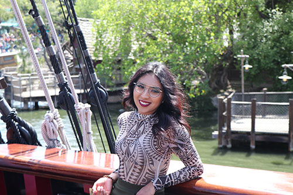

<!doctype html>


<html>

</html>
<head>
     <title>CINTHYA NUNEZ</title>
    

    <link rel="stylesheet" href="css/nunez%20cinthya_webfinal.css"> 
    
</head>
<body>
    <div class="container">
        
        
    
        <header></header> 
        
    
 

    
        <h1>INTRODUCTION</h1>
        
        <p> Hello my name is Cinthya Nunez but cinthya it’s spelled with an i. I am taking VMD 105 because i like taking pictures of the colors, textures and objects around me.I also wanted to develop my skills with potoshop.My  goals are to be able to direct,produce ,write and act my own videos. I also decided to take this class because i like learning new subjects and i like to maintain my mind occupied.My favorite colors are patels,warm and bright colors they reflect my personality.</p>        
        
    

        
    <a href="index.html">Home</a>|
    
    <a href="photoshop.html">Photoshop</a>|
    
    <a href="Vector.html">Vector</a>|
    
    <a href="Time%20Based%20Media.html">Time Based Media</a>|
    
        <a href="Print.html">Print</a>| 
        
    <a href="Contact.html">Contact<a>|
     
        
        
        
    
        </div>
  
</body> 